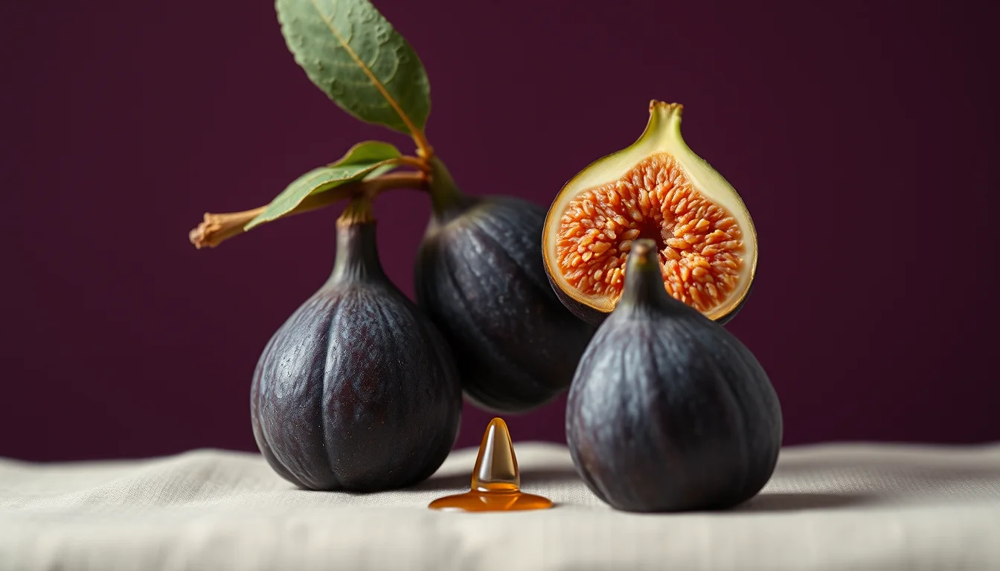
Marketing campaign proposal for the Romeo family, Shepparton
A campaign to retail buyers from 16 November 2026, then to shoppers from the first week of the 2027 fig harvest. The strategy, the creative, the media plan with its timeline, the budget, the research behind each number, and the decisions the executive team needs to make.
IThe short version
A bottle on forty buyers' desks in November. A spoon in the shopper's hand in February. A lunch under the trees in March. About $19,000 in hard costs.
Lacrima Fici is pure Black fig syrup from an orchard the Romeo family has farmed at Shepparton since 1944. It goes to retail in a 200 mL flask bottle at $7.50 wholesale in cases of 12, with a recommended shelf price of $12.00, with first deliveries in the week of 15 February 2027, the first week of the Victorian fig harvest.
Three facts from the research shape the plan. Australia imported 3,731 tonnes of maple syrup in 2025, a fifth more than the year before, all of it imported, so the pure-syrup shelf is growing with no Australian line on it. Pure maple sells at $2.20 to $3.80 per 100 mL in Coles or Woolworths, so a $6.00 per 100 mL fig syrup is two and a half times the shelf, which means the pitch is margin, provenance, use, never price. The listings a buyer can have on shelf by February are independents: Ritchies, IGA stores buying direct, gourmet grocers. Coles with Woolworths range by calendar once or twice a year, so they get the box in November as the start of a 2027 range review, not as a February delivery.
From 16 November a bottle, a brass spoon, a handwritten card from Santo Romeo land on the desks of forty named buyers, with Santo's own voice on LinkedIn behind them, a story in the trade press, a trade page carrying the sell sheet. From 15 February shoppers taste the syrup on yoghurt then on blue cheese in the stores which said yes, read about it in the food pages during fig season, see it on Instagram from Victorian recipe creators, and on Saturday 13 March twenty writers, podcasters and buyers eat lunch under the fig trees at Central Avenue in the middle of the Melbourne Food and Wine Festival.
Every tactic below carries the reason Santo would do it. The full argument is in the strategy document; the figures trace to four research documents linked at the end.
| The product | 200 mL pure Black fig syrup, one ingredient, 12 months ambient |
|---|---|
| Wholesale | $7.50 a bottle, $90.00 a case of 12 |
| Recommended retail | $12.00 (37.5% to the retailer); $12.50 recommended (40%) |
| Trade campaign | 16 November 2026 to 12 February 2027 |
| First deliveries | Week of 15 February 2027 |
| Consumer campaign | 15 February to Easter, 28 March 2027 |
| Hard cost | About $19,000 recommended; $12,500 minimal; $35,000 extended |
IIProduct and price
The margin argument against maple is in dollars, not percentages. A facing of own-brand maple earns a supermarket about $1.68 a bottle. The same facing holding Lacrima Fici returns $4.50.
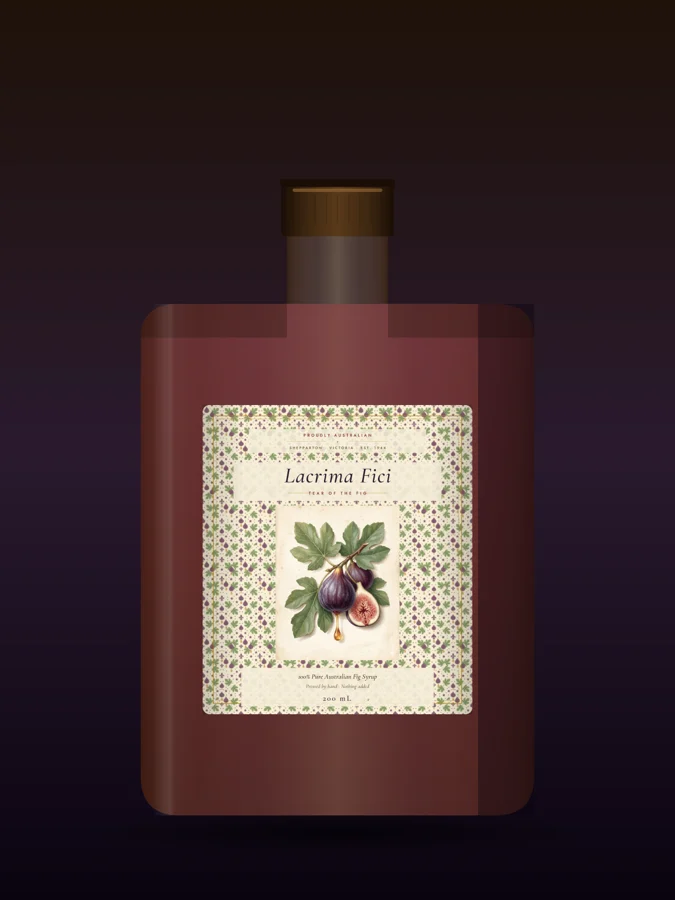
Ripe Black figs, crushed, warmed until they thicken, bottled. Nothing added. Twelve months ambient, refrigerate after opening. The label is the Lacrima Fici design already approved, with "Tear of the Fig" beneath the name.
Fig syrup sold as a table syrup is very likely GST-free. The Australian Taxation Office's detailed food list treats syrups for flavouring food, maple syrup among them, as GST-free condiments, while syrups for flavouring beverages are taxable, judged on how the product is marketed. There is no entry for fig syrup, so the family's accountant should confirm the reading. The consequence is clear enough to act on now: the label stays on food uses, and the cocktail idea is a conversation with Dan Murphy's buyers rather than a line on the pack.
The brief moved between $12.50 in the first email and $12.00 in the second. At $12.00 an independent grocer earns 37.5 per cent, which is acceptable. At $12.50 the figure is a round 40 per cent, which is the number a buyer wants to see on a sell sheet. The recommendation is $12.50. Everything in this package is written at $12.00 so the executive team can decide.
A distributor does not fit at this price: 20 per cent on top of $7.50 leaves the retailer 25 per cent, or takes the farm to $6.00 a bottle. The plan sells direct, with a fortnightly Melbourne delivery run through the season, with freight at cost on orders under four cases. Australia Post charges $24.70 to $29.45 to send a 12-bottle case interstate, a third of the case's value.
Gross margin a retailer earns per bottle
Maple at the published 28 per cent group gross margin of Coles and Woolworths; Lacrima Fici at the proposed $7.50 wholesale.
| Item | Value |
|---|---|
| Own-brand pure maple, $6.00 | $1.68 |
| Queen pure maple, $9.50 | $2.66 |
| Lacrima Fici, $12.00 | $4.50 |
| Lacrima Fici, $12.50 | $5.00 |
Coles FY26 gross margin 27.8 per cent; Woolworths Australian Food F26 28.6 per cent. Category margins on specialty lines are reported higher, so the maple figures are generous to maple.
| Scenario | Retailer buys at | Shelf price | Gross margin |
|---|---|---|---|
| Direct to store, GST-free, $12.00 | $7.50 | $12 | 37.5% |
| Direct to store, GST-free, $12.50 | $7.50 | $12.50 | 40.0% |
| Direct, if GST applied, $12.00 | $7.50 | $12 | 31.3% |
| Through a distributor at 20% | $9 | $12 | 25.0% |
| Supermarket, 10% everyday discount | $6.75 | $12 | 43.8% |
| Supermarket, 20% everyday discount | $6 | $12 | 50.0% |
The site still trades as Fyrup, "God's Fig Syrup", while the label carries Lacrima Fici. A buyer who opens the box then finds a different brand online stops there. The site also sells a case of twelve 250 mL bottles for $149.95, which works out at $10.00 for a 200 mL equivalent, 17 per cent under the proposed shelf; a shop owner who finds it will complain. The case either rises to shelf parity or becomes a gift case. The line about diabetics comes down at the same time: no glycaemic or health claim can be made without testing the actual syrup.
Bought at market prices of $10 to $15 a kilogram, the figs alone would cost more than the shelf price, because a pure reduction needs something like six to fifteen kilograms of fruit for a litre. The recipe works at $7.50 because the fruit is the family's own second-grade crop, with no value as fresh fruit. That is the truth under the "whole crop" story, and it is worth saying plainly to Santo before he commits to a volume.
IIIMarket
There are no sales statistics for fig syrup in Australia; the category is too small to be scanned. The buyer should be told so in those words, then shown the maple import line and the price ladder.
Australian imports of maple syrup and maple sugar, tonnes
Volume rose 19.9 per cent in 2025 and 31.4 per cent on 2021; value rose to C$40.9 million.
| Year | Tonnes | C$ million |
|---|---|---|
| 2021 | 2,840 | 25.7 |
| 2022 | 2,832 | 28.3 |
| 2023 | 2,744 | 30.1 |
| 2024 | 3,112 | 32.2 |
| 2025 | 3,731 | 40.9 |
Agriculture and Agri-Food Canada, Statistical overview of the Canadian maple industry 2025, page modified 8 June 2026.
Agriculture and Agri-Food Canada's trade data shows Australian maple imports at 2,840 tonnes in 2021, 3,112 tonnes in 2024, 3,731 tonnes in 2025, worth C$40.9 million. Australia is the fourth largest maple importer in the world by volume. In October 2026 Canadian press reported Quebec's strategic maple reserve nearly empty, with the last stock expected to sell out by the end of February 2027. If maple prices rise here, the gap to fig narrows. That is colour for a conversation, not a claim for a sell sheet.
No fig syrup sits on a national supermarket shelf that the research could find. The Australian makers are small and regional: The Figgery on Kangaroo Island, whose 250 mL Sticky Fig Syrup sells at $14.90 in South Australian independents and in Maggie Beer's hampers; Hillside Family Grove at Gulgong, 250 mL at $16.00; Rosnay Organic at Canowindra, a spiced 375 mL at $15.00. Per 100 mL, Lacrima Fici at $6.00 sits level with The Figgery at $5.96, just under Hillside at $6.40, below Maggie Beer's fig vino cotto at $8.20. Nobody is making a Victorian fig syrup. "Black figs from Shepparton" is an open claim.
Two cautions. The Figgery already pitches itself as a fig alternative to maple, so the idea is not unclaimed, though its reach is South Australian. And one retailer describes The Figgery as "no added sugar" while the brand's own Instagram says it is made with Australian sugar. A single-ingredient list is a sharper claim than any competitor can make, provided the recipe keeps it true.
Shelf price per 100 mL, pure maple against fig syrups and fig condiments
Australian online and supermarket prices read on 24 October 2026. Lacrima Fici at its recommended $12.00 for 200 mL.
| Item | Value |
|---|---|
| Steeves maple, 250 mL | $2.20 |
| Coles Finest pure maple, 250 mL | $2.40 |
| Woolworths 100% maple, 250 mL | $2.40 |
| Queen pure maple, 250 mL | $3.80 |
| Rosnay spiced fig syrup, 375 mL | $4.00 |
| The Figgery, 500 mL | $5.38 |
| The Figgery, 250 mL | $5.96 |
| Lacrima Fici, 200 mL at $12.00 | $6.00 |
| Lirah fig balsamic, 250 mL | $6.00 |
| Hillside Family Grove, 250 mL | $6.40 |
| Leonardi fig vincotto, 250 mL | $7.58 |
| Pukara fig balsamic, 250 mL | $7.60 |
| Dante fig vino cotto, 250 mL | $7.62 |
Sources in the market research document. Petimezi sold by weight is left out as not comparable.
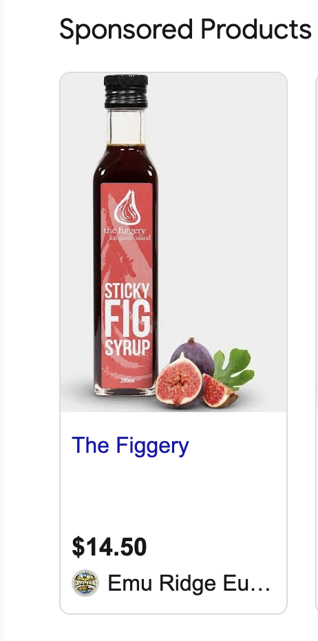
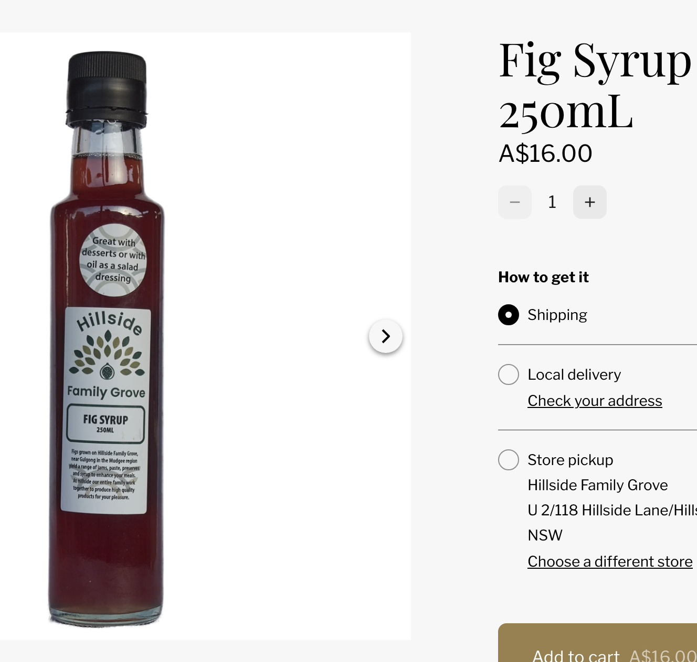
Fig season in Victoria runs from the first weeks of February into April, with a tail into May. The campaign to shoppers is six weeks long for that reason.
IVRetail buyers, from 16 November 2026
The proposition in one sentence: the Australian pure syrup for a shelf that is entirely imported, returning $4.50 a bottle against $1.68 on own-brand maple, delivered from the first week of the harvest.
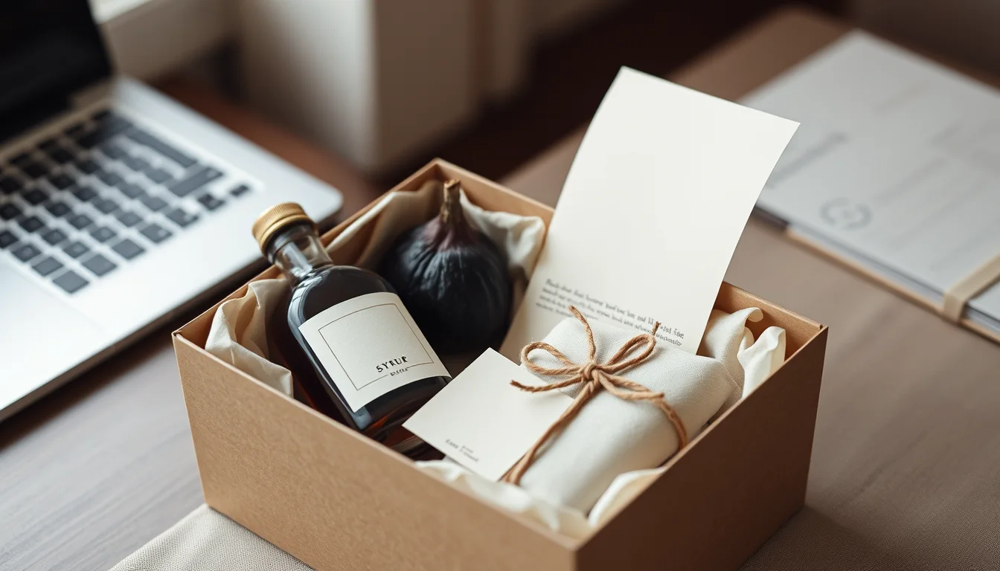
One 200 mL bottle, a small brass spoon, a card in Santo's hand, the sell sheet with the three numbers. Forty boxes posted on 16 and 17 November so they land before the buyers' Christmas lockdown in the third week of December. Twenty go to the named retailers; twenty to Victorian delis, gourmet grocers and the specialty distributors who supply them. Australia Post charges $16.00 for the parcel, so the forty cost about $640 in postage, roughly $1,600 all up. Every box is followed by a call from Santo ten days later. The box is a sample; the call is the range review date. A second round goes out the week of 18 January to anyone who did not answer.
Coles wants a RangeMe profile its buyers can search before a category review, paired with the direct approach; Coles Local's twelve Victorian stores range premium local lines through the same route. Woolworths takes submissions through its Partner Hub against a Range Review Calendar, once or twice a year by sub-category. Both are a 2027 range review, not a February delivery, and both get the box because the relationship takes a year to build. Metcash's own evidence to the ACCC says IGA retailers are free to buy local lines direct, with a strong preference for local producers; Ritchies trades under the IGA banner and is Victorian. Direct-to-store IGA and Ritchies are the realistic February listings. Harris Farm has a gourmet buyer inbox but no Victorian store. Dan Murphy's ranges a cordials-and-syrups category, so the cocktail use has a home there, as a separate conversation. Thirsty Camel reaches mainly South Australia; one box, low expectations.
One name is missing from the brief. The Shepparton News wrote on 23 April 2024 about Figtasia Farms at Shepparton East, run by a Santo Romeo and his son Joel, with about 5,400 trees and nearly thirty years supplying fresh figs to Aldi. If that is this family, Aldi already knows them, and Aldi's Special Buys is a listing route the brief leaves out. To be confirmed with Santo.
Dear Michael,
A bottle of Lacrima Fici is in the box with this letter. It is pure Black fig syrup, one ingredient, made by my family at Shepparton where we have grown figs since 1944.
I am writing because the pure syrup shelf in Australian supermarkets is entirely imported, and the imports grew by a fifth last year. We can supply the Australian line beside them: a premium pure syrup that returns $4.50 a bottle, with a less dominating sweetness that sells beyond breakfast, on cheese, over yoghurt, as a glaze. The 200 mL bottle wholesales at $7.50 in cases of 12 against a $12.00 recommended retail, a 37.5 per cent margin. First deliveries are 15 February 2027, the start of our harvest.
Taste it over something from the fridge tonight. If it belongs on your shelf, I would like twenty minutes with you before Christmas to settle the detail.
Santo Romeo
Romeo Farm, Shepparton
0477 815 638
The covering letter, one per buyer, signed by hand. The name is the only variable. Full trade copy, including the sell sheet, the card, the follow-up email and the trade release, is in the trade copy document.
Six posts in Santo Romeo's name, weekly from 16 November then fortnightly through January, written for a category manager scrolling in work hours. The first, third and fifth are promoted to buying titles at the named retailers; the audience is a few hundred people, so $1,500 at around $10 a click buys the right eyes rather than many eyes. Two of the six:
Every pure syrup on the Australian supermarket shelf is imported. We have been growing figs at Shepparton since 1944 and for the last few years we have pressed the ripest of them into a pure syrup with nothing added. From February it will be available to retailers in cases of 12. If you buy for a table syrup or deli set, the box is on its way to you.
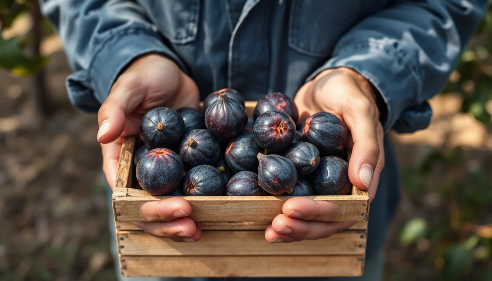
Australia imported 3,731 tonnes of maple syrup in 2025, up a fifth on 2024, and most of it sells at six dollars. Fig syrup grows two hours up the Hume. The uses overlap almost entirely. The difference is a sweetness that does not take over the plate, which is why it works on cheese and in glazes where maple would be too much, and a price that returns the retailer $4.50 a bottle.
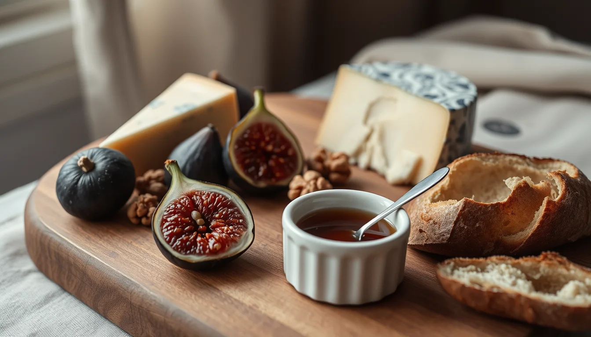
The trade press gets a release on 16 November with a bottle behind every pitch: Inside FMCG, Retail World, Australian Food News, Food and Drink Business, where Kim Berry's team takes story ideas by email, Hospitality Magazine for the cheese angle. Founder podcasts such as Eat Drink Innovate are offered a conversation with Santo in November or January. A trade page on the website carries the sell sheet, the specification, the barcodes, the shelf artwork, because the buyer's assistant will look for case dimensions at four on a Friday afternoon.
Before any box goes out, the RangeMe profile, the Metcash expression of interest (its portal reopens on 26 October) and the Woolworths Partner Hub registration are lodged. A box alone is a sample; a profile is a candidate. And from 16 November the brand's Instagram posts three times a week with $300 a month behind the best, because every buyer looks at the account before replying, and forty posts with real engagement is proof of demand.
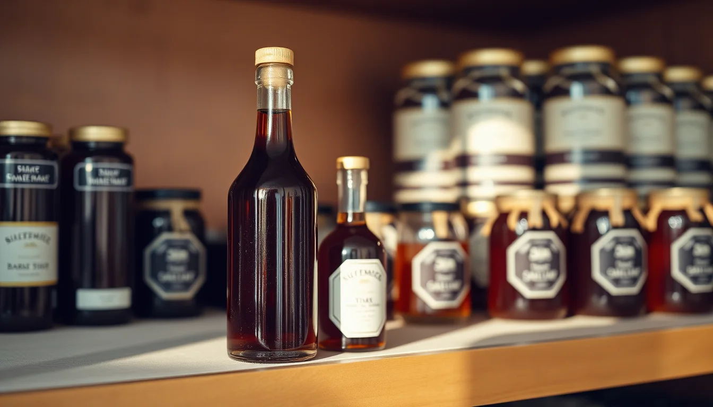
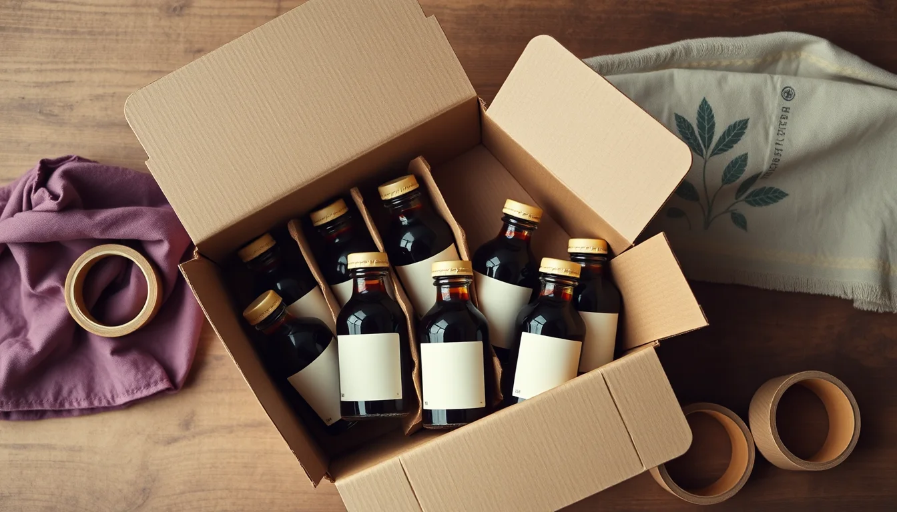
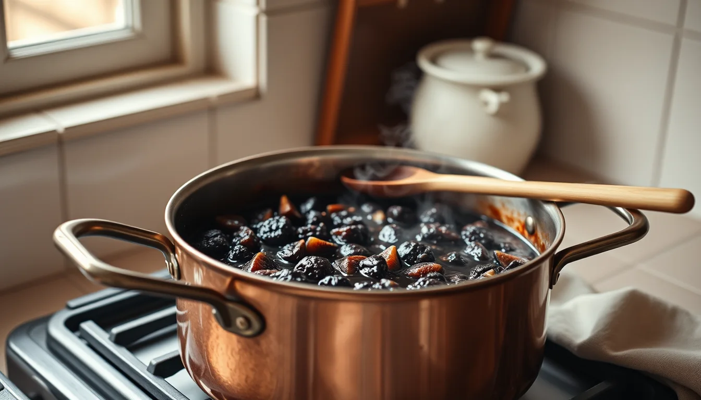
| Tactic | What happens | When | Paid or earned | Hard cost | Why Santo would do it |
|---|---|---|---|---|---|
| RangeMe, Metcash and Partner Hub paperwork | Coles reads RangeMe before category reviews; Woolworths takes submissions through Partner Hub against its Range Review Calendar; Metcash's food portal reopens 26 October. All three lodged before the boxes go out | 2 Nov to 13 Nov | Owned | $150 | The majors range once or twice a year by calendar. Nothing sent in November lands in February unless the paperwork is already in their systems; a box alone is a sample, a profile is a candidate. |
| Buyer's box direct mail | 40 boxes to named buyers: Coles and Coles Local, Woolworths and Metro, Metcash and IGA state category managers in Victoria, NSW, Queensland and South Australia, Ritchies, Harris Farm (gourmet grocery inbox), David Jones Food, Leo's Fine Food, FoodWorks, Dan Murphy's (as a separate cocktail-syrup conversation), and 20 independent delis, gourmet grocers and specialty distributors in Victoria | 16 Nov to 27 Nov; again 18 Jan to 29 Jan | Owned | $1,600 | A buyer decides with their mouth. A bottle on the desk is the only medium that gets tasted. Forty boxes cost less than one trade-magazine page, and the independents among them are the listings that can be on shelf by February. |
| Follow-up calls and meetings | Santo Romeo phones every box recipient ten days after delivery; meetings before 18 December or in the January round | 30 Nov to 18 Dec; again 25 Jan to 12 Feb | Owned | nil | Boxes without a call are gifts. The call turns a sample into a range review date. |
| LinkedIn, founder posts | Six posts in Santo's name, weekly from 16 November then fortnightly; comments answered same day | 16 Nov to 12 Feb | Earned | nil | Category managers live on LinkedIn during work hours. A founder's own words outperform a brand page every time the platform has measured it. |
| LinkedIn, sponsored posts to buyer titles | Thought-leader ads promoting posts 1, 3 and 5 to category, buying and merchandise titles at the named retailers; one Sales Navigator seat for three months | 16 Nov to 29 Jan | Paid | $1,950 | The audience is a few hundred people. Paying to reach exactly them is cheaper than reaching everyone. |
| Trade media release and pitches | Release to Inside FMCG, Retail World, Australian Food News, Food & Drink Business, C&I and The Shout; individual pitches with a bottle to each editor | 16 Nov to 11 Dec | Earned | $300 | A buyer who has read about the product before the box arrives opens the box. Trade editors want new Australian lines; the import angle is a story. |
| Podcast pitches, trade | Santo offered to FMCG and grocery podcasts for a recorded conversation in November or January | 23 Nov to 29 Jan | Earned | nil | Thirty minutes of a founder talking is worth more to a buyer than any advertisement, and the audio is reused in social for a year. |
| Trade page, sell sheet, specification sheet | Trade page on the website with downloadable sell sheet, specification, barcodes and shelf artwork; 200 printed sell sheets | 9 Nov to 13 Nov | Owned | $250 | The box sends them somewhere. The page is where the buyer's assistant finds the case dimensions at 4 pm on a Friday. |
| Instagram, Facebook and X, feed build | Three posts a week from 16 November so the feed a buyer checks looks like a brand that is already selling; $300 a month to boost the best | 16 Nov to 12 Feb | Paid | $900 | Every buyer looks at the Instagram account before replying. An account with 40 posts and real engagement is proof of demand; an empty one is a reason to say no. |
| C&I Expo, Melbourne | Convenience and Impulse Retailing Expo, 16 and 17 March 2027, MCEC; free for buyers, independent grocery and convenience. A shared or small stand if budget extends, otherwise Santo walks the floor with bottles | 16 Mar to 17 Mar | Option, not costed | nil | The first trade floor inside the campaign window where independent grocery buyers gather. Fine Food Australia is not until September 2027 in Sydney. |
| Total hard cost, retail buyers | $5,150 | ||||
VShoppers, from 15 February 2027
Tasting is the one medium that converts on the spot. Fig syrup on blue cheese is the pairing that converts. Everything else sends people to the spoon.
Shrove Tuesday falls on 9 February 2027, a week before launch, and is the teaser. Easter Sunday is 28 March and closes the window. Both dates correct the brief.
In the stores which ranged the syrup, a demonstrator stands at the shelf on Saturdays from 20 February with thick yoghurt under a thread of syrup on a spoon, then a cube of blue cheese for the second taste. Twelve tasting days across Ritchies and IGA stores in Melbourne and the Goulburn Valley at $350 a day with product; a family member behind the table halves it. A shelf talker under every facing reads "Anywhere you'd pour maple". A recipe card goes home with every taster.
Fig season is in every food section in February. Twenty-five kits, a bottle, a kilogram of the harvest, a story card, go on 8 February to the writers the research found reachable: Dan Cunningham at Broadsheet, who says in print he takes food products, with Laura Box, Broadsheet's Melbourne food editor; Kara Monssen at the Herald Sun; Kylie Imeson at Country Style, whose readers prefer Australian-made by a wide margin; Good Food, Gourmet Traveller, delicious.; Rushani Epa at Time Out Melbourne; and the independent writers Richard Cornish, Dani Valent, Jill Dupleix and Lee Tran Lam, approached as journalists with a short email first, never an unannounced parcel. The producer podcasts are the best fit of all: The Producers and Dirty Linen are reached through one Deep in the Weeds form, Every Bite on ABC Radio National runs culture-through-food episodes where a fig history fits, Triple R's Eat It takes producer interviews for the cost of an email.
The single biggest consumer idea is a lunch at the orchard. Saturday 13 March, inside the Melbourne Food and Wine Festival's 5 to 21 March window though not an official event: twenty seats for writers, podcasters, the buyers who said yes; a coach from Melbourne; figs picked from the tree; the copper pot on the stove; a long table under the trees with the syrup on the cheese, in the glaze, in the glass. About $3,500 with the coach. The orchard in harvest is the one asset no competitor can copy.
Twenty-five Victorian recipe creators with 10,000 to 80,000 followers are seeded from 1 February, with four paid recipe reels at around $400 each; the Australian micro tier publishes at $100 to $500 a post. Two thousand dollars of Instagram and Facebook advertising runs from 15 February, geo-targeted to Victoria at A$12 to A$18 per thousand impressions, with one job: tell people within driving distance of a ranging store that the bottle exists while it is in season. The local press costs nothing and reaches the Ritchies shopper first: Shepparton News, which wrote about the farm in April 2024, the Shepparton Adviser, ABC Goulburn Murray, farm-gate weekends through March, a stall at TatFest in Tatura on Sunday 7 March.
Pure Black fig syrup, grown and pressed at Shepparton. One ingredient.
Reverse: Pancakes. Porridge. Yoghurt. Blue cheese. A pork glaze.
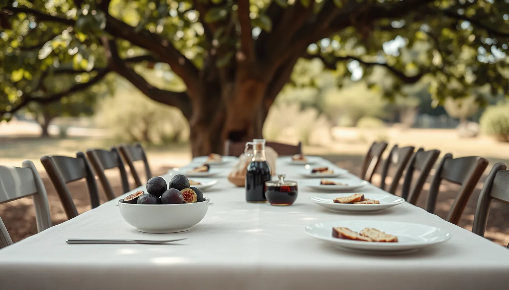
SBS is held as an option, not bought. SBS Media publishes no minimum spend or rate card; a quote is requested for a small SBS On Demand test in Victoria and judged in the extended budget. SBS's own guidelines treat paid product integration as third-party funding needing formal approval, and bar any "as seen on SBS" claim, so the plan cannot rest on a pantry appearance. Product is offered to The Cook Up's producers as a fig-season ingredient, which costs a bottle. Adam Liaw, at 320,000 followers, takes brand work through a formal route with a fee. "Jackie Schofield" in the brief is almost certainly Justine Schofield, 203,000 followers, with SBS On Demand series; she is approached as a gifted send. Neither is in a low budget.
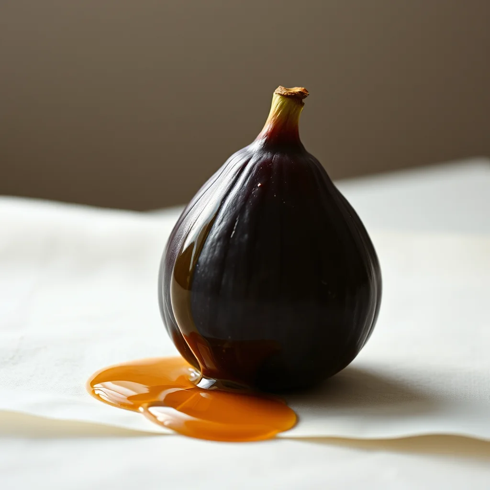
Second week of February at Shepparton. The Black figs split at the eye and weep. That bead is where this bottle starts.
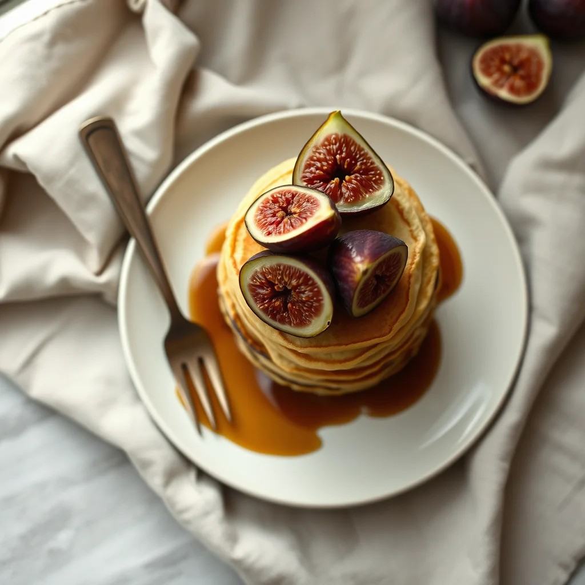
Anywhere you'd pour maple.
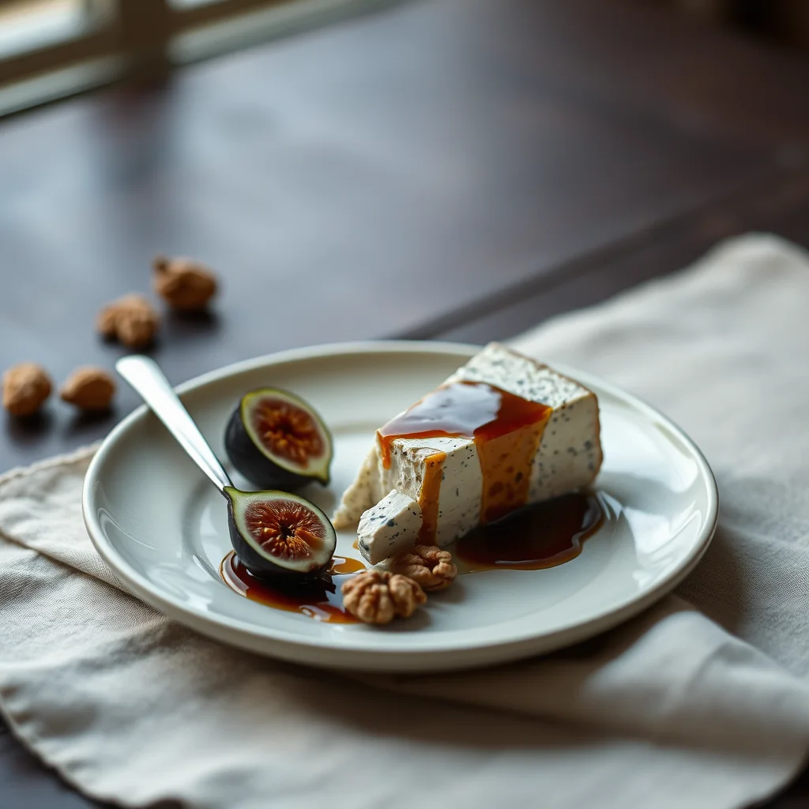
Blue cheese, a spoon of fig syrup, walnuts. The pairing which converts people at tastings.
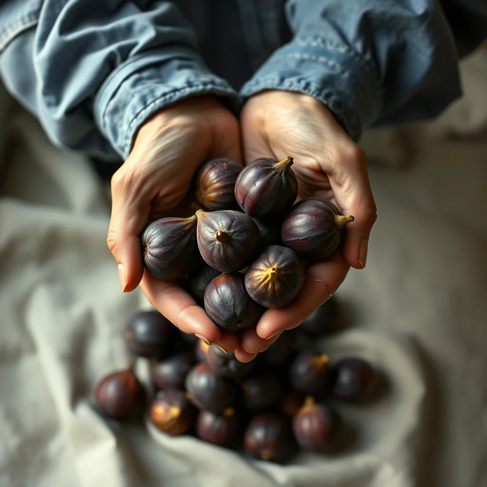
Santo Romeo, third generation. His grandfather planted the first trees in 1944.
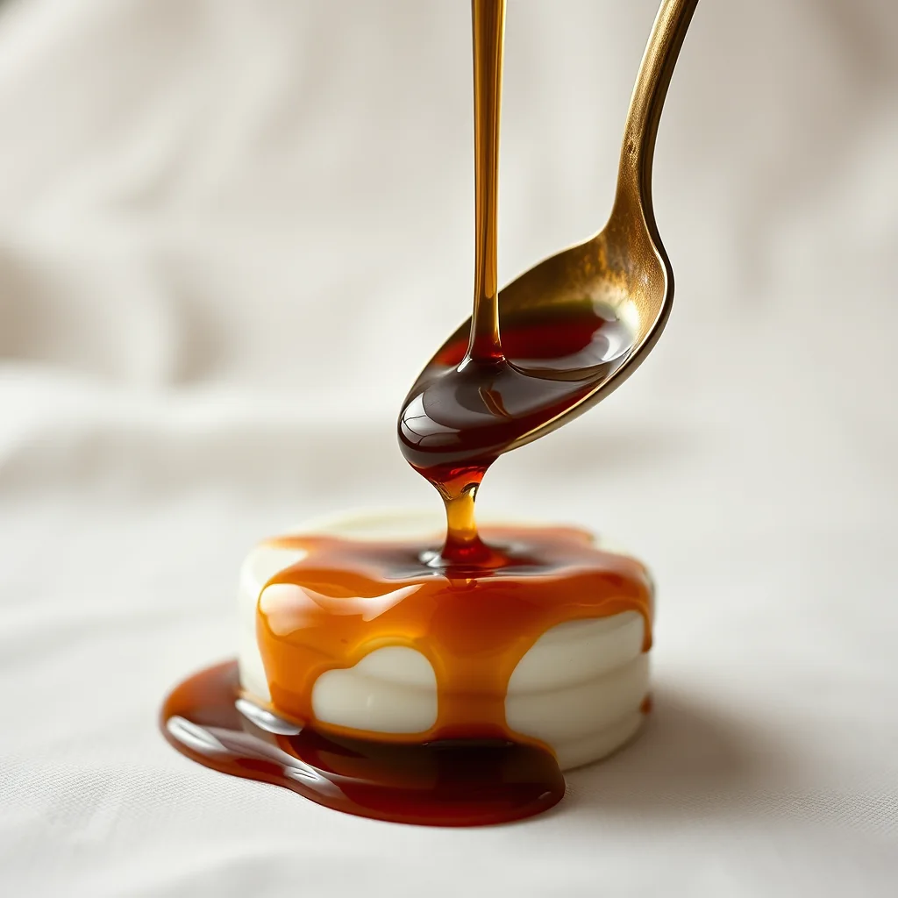
Weekday breakfast. Thick yoghurt, two figs, a slow pour.
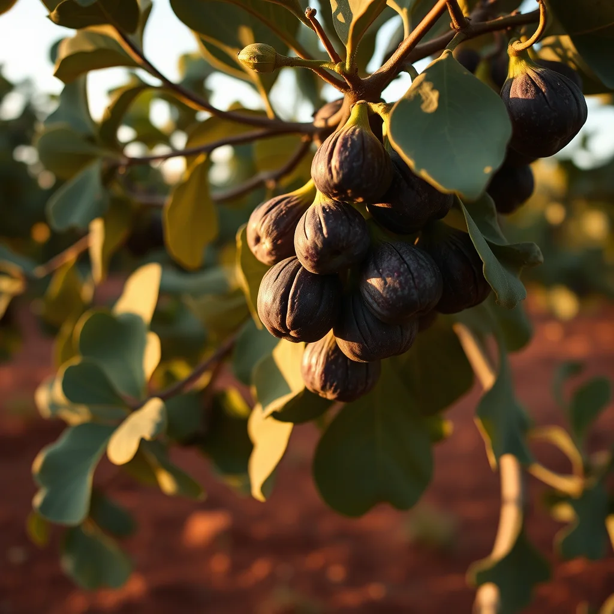
180 kilometres up the Hume from Melbourne. Red soil, big sky, figs.
All ten launch captions, the Facebook posts, the X posts, the writer pitch, the influencer brief, the tasting script, the recipe card and the harvest lunch invitation are in the consumer copy document.
| Tactic | What happens | When | Paid or earned | Hard cost | Why Santo would do it |
|---|---|---|---|---|---|
| In-store tastings | Twelve tasting days across ranging Ritchies and IGA stores in Melbourne and the Goulburn Valley, Saturdays from 20 February; yoghurt and blue cheese on the spoon | 20 Feb to 27 Mar | Paid | $4,200 | Tasting is the one medium that converts on the spot. Fig syrup on blue cheese sells itself; nobody buys an unknown syrup from a shelf talker alone. |
| Shelf talkers and recipe cards | A shelf talker under every facing, a recipe card at every tasting and in every online order | 15 Feb to 28 Mar | Owned | $600 | The shopper is standing in front of maple. Six words tell them this is the same use and grown in Victoria. |
| Consumer media release and writer seeding | Release on 15 February; 25 kits (bottle, figs, story card) to Broadsheet's Dan Cunningham and Laura Box, Good Food, Herald Sun Taste (Kara Monssen), Country Style (Kylie Imeson), Gourmet Traveller, delicious., Time Out Melbourne (Rushani Epa), Richard Cornish, Dani Valent, Jill Dupleix and Lee Tran Lam | 8 Feb to 5 Mar | Earned | $900 | February is fig season in every food section. A new Victorian fig product is the easiest pitch of the year to land. |
| Harvest lunch at the orchard | Saturday 13 March, inside the Melbourne Food and Wine Festival window of 5 to 21 March; twenty seats for writers, podcasters and buyers, coach from Melbourne, the family cooking under the trees | 13 Mar | Earned | $3,500 | The orchard in harvest is the brand's one unrepeatable asset. One day there produces more coverage than a month of emails, and the buyers who come leave as advocates. |
| Recipe creators, seeded and four paid | 25 Victorian food creators of 10,000 to 80,000 followers seeded from 1 February; four paid recipe reels at about $400 each | 1 Feb to 19 Mar | Paid | $2,700 | A creator who cooks on camera reaches a buying audience for a fraction of a magazine page and leaves the brand a library of recipe video. |
| Food podcasts | Santo pitched to The Producers and Dirty Linen (one Deep in the Weeds form reaches both), ABC Radio National's Every Bite with Matt Preston, Triple R's Eat It, and ABC Goulburn Murray for harvest-season episodes | 1 Feb to 26 Mar | Earned | nil | Producer-story podcasts are built on exactly this story: three generations, the figs the spec rejected, nothing added. |
| Instagram and Facebook advertising | Geo-targeted to Victoria, adults 25 to 64 with cooking interests; recipe reels and the store-finder post; retargeting of site visitors | 15 Feb to 28 Mar | Paid | $2,000 | Paid social at this scale does one job: tell people within driving distance of a ranging store that the bottle exists, in the six weeks it is in season. |
| Local and regional press | Shepparton News (which ran "Giving a fig for heritage" on the farm in April 2024), Shepparton Adviser, ABC Goulburn Murray, WIN News; farm-gate weekends through March; a stall at TatFest, Tatura, Sunday 7 March | 15 Feb to 28 Mar | Earned | nil | Local coverage is free, reliable and read by the Ritchies and IGA shoppers who will see the bottle first. |
| SBS Food, Adam Liaw, Justine Schofield | Not bought. SBS Media publishes no minimum spend and bars "as seen on SBS" claims; paid product integration needs formal approval. Product offered to The Cook Up's producers as a fig-season ingredient; a quote requested from SBS Media for a small SBS On Demand test in Victoria, held for the extended budget. Justine Schofield (203,000 followers, SBS On Demand series) approached as a gifted send, not a paid post | 15 Feb to 12 Mar | Option, not costed | nil | Television sponsorship starts in the tens of thousands and SBS will not let a brand say it was on air. A pantry mention earned through the producers costs a bottle. The paid option stays in the extended budget where it can be judged against a quote. |
| Total hard cost, shoppers | $13,900 | ||||
VICreative routes
Why this, instead of the maple I already buy? Each route answers differently. The recommendation runs one platform with a line for each audience, and the executive team can choose a single line instead.
Every February the Romeo family's Black figs ripen in the Goulburn Valley heat until they split and weep. That bead of syrup is where this bottle starts. Crushed, warmed gently until it thickens, bottled. Pour it anywhere you would pour maple.
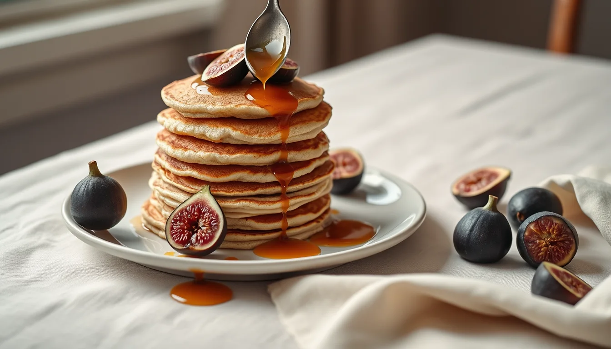
Maple imports rose a fifth last year and every bottle sells near cost. Lacrima Fici is the Australian pure syrup beside them: one ingredient, a cleaner sweetness, grown 180 kilometres from Melbourne, returning the retailer $4.50 a bottle.
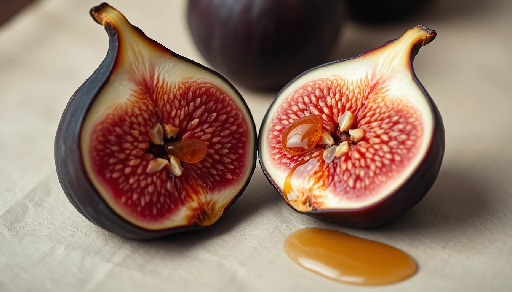
A fig with a sun spot tastes the same as one without. For years the ones with a split skin went to the birds. Now they are pressed, and the whole crop is sold. Nothing wasted, nothing added.
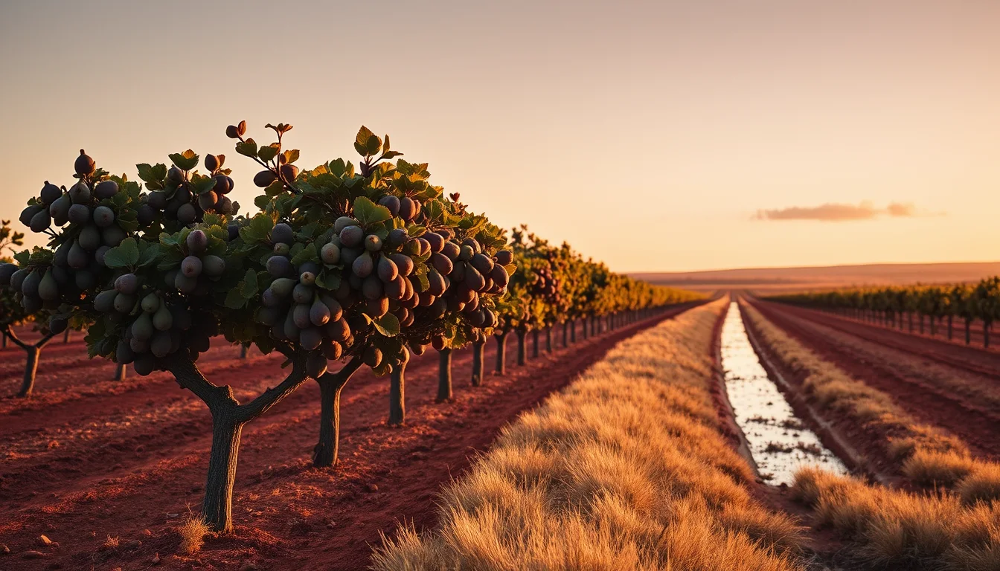
Three generations, one orchard, one ingredient. Santo Romeo's grandfather planted the first trees on Central Avenue, Shepparton. The family is still there, and so are the trees.
Route A, Tear of the Fig, is the label. Quiet, premium, Italian in its manners. It gives a journalist an image and a sentence, which is most of a product story. On its own it does not say "table syrup" fast enough for a Coles category manager reading a margin line.
Route B, Anywhere you'd pour maple, is the practical line for the buyer and the shelf. It must never imply price parity, since pure maple sells at $2.20 to $3.80 per 100 mL against $6.00. The Figgery already pitches "fig instead of maple" in South Australia, so the idea is not unclaimed. "Less dominating" is a taste description and is fine; "better for you" is not, without testing.
Route C, The whole crop, is the press story: a villain (the fresh-fruit specification), a hero (the family), a resolution (the bottle). Telling a supermarket buyer their spec is the villain is a poor opening, so for trade it becomes "whole crop" and "nothing wasted", which buyers now carry sustainability targets against.
Route D, Eighty summers, is the proof behind the others. Every second artisan brand claims heritage, so on its own it tells nobody what to do with the bottle, but it carries local press, Ritchies shoppers and the gift season.
Run Tear of the Fig as the brand, because it is on the label and it is distinctive. Give the buyer Route B's proposition with the margin in the same breath. Give the shopper "Anywhere you'd pour maple" on the shelf talker. Give the press the whole-crop story set in the orchard. The decision for the executive team is whether to accept that layered arrangement or run one line everywhere, which is cheaper to brief and sells less hard in each channel. The full reasoning is in the creative platforms document.
Deep aubergine, cream linen, antique gold, sage green, soft window light, the fig weeping its single drop. Twenty-eight frames were rendered locally for this package; they are concept renders to brief a photographer, with the real label and Santo's own hands to be photographed at the orchard in February. The frames below are a selection; the full set with its uses is in the image plan.
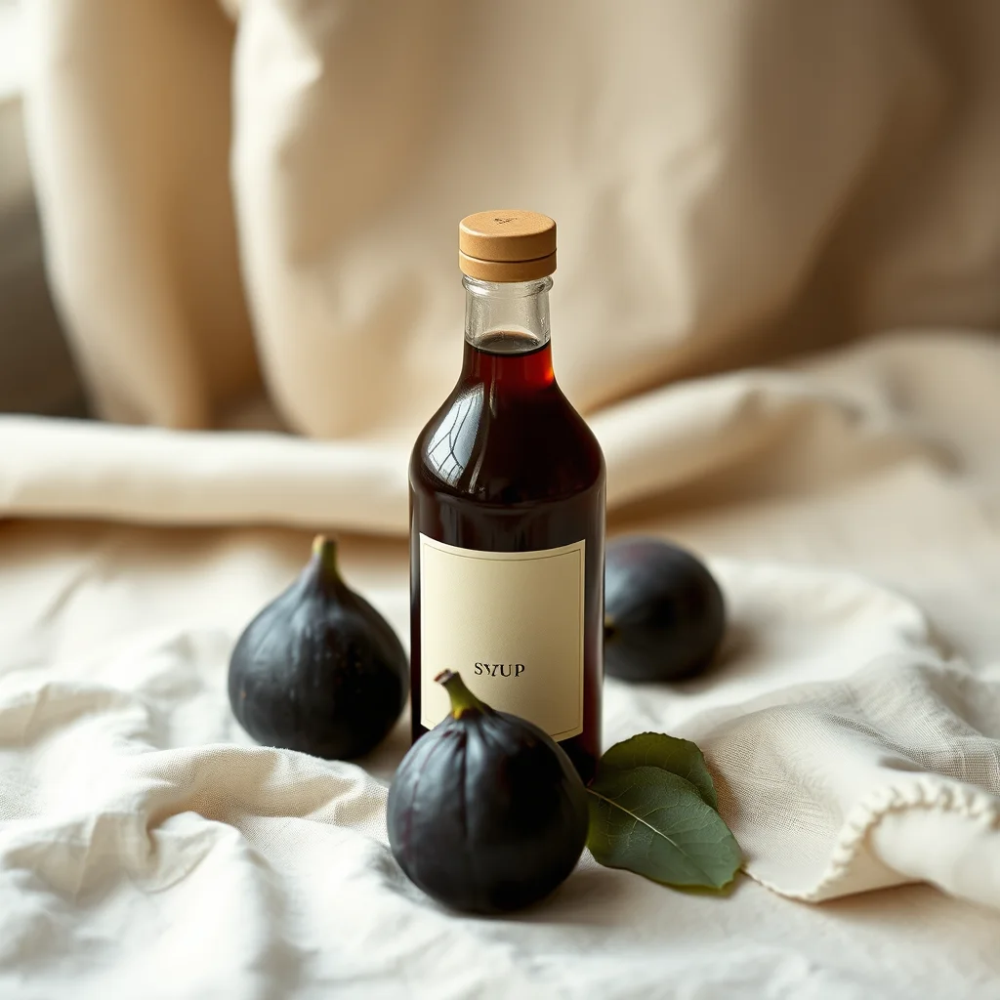
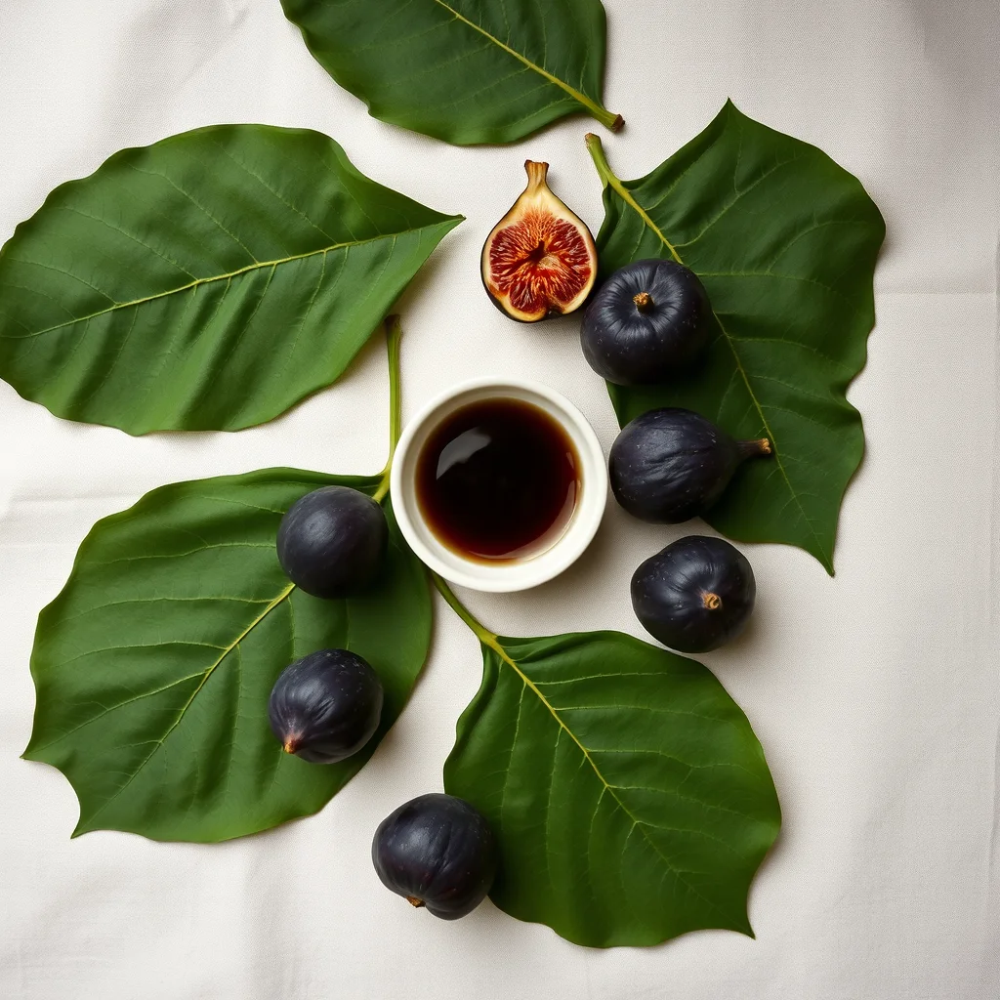
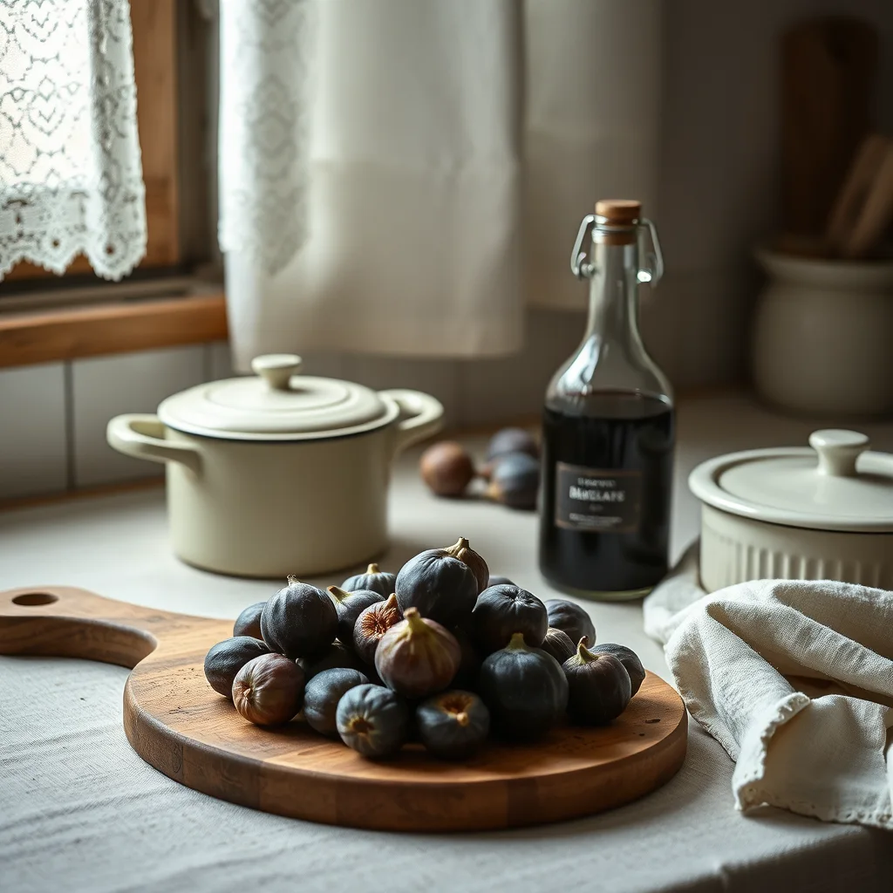
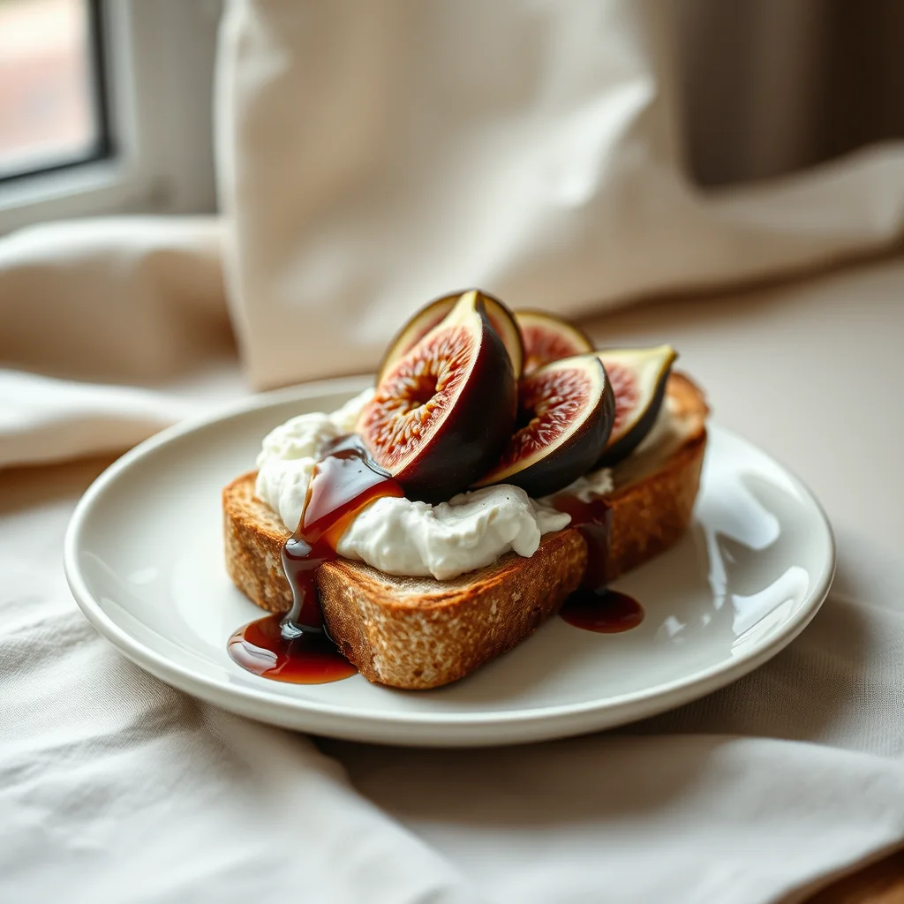
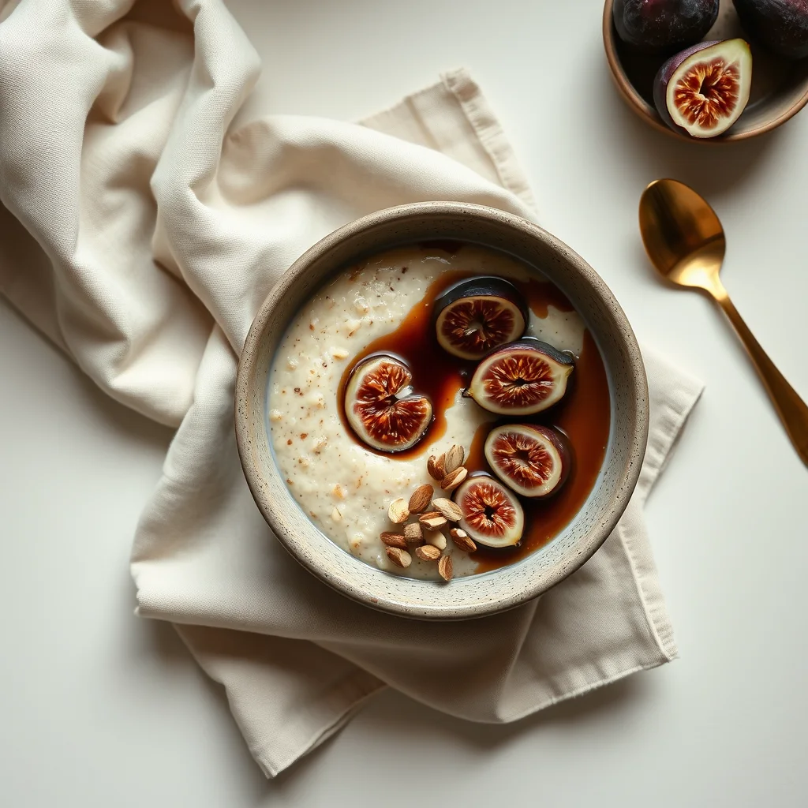
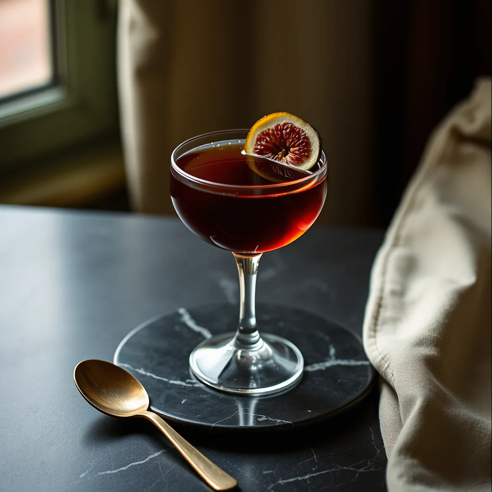
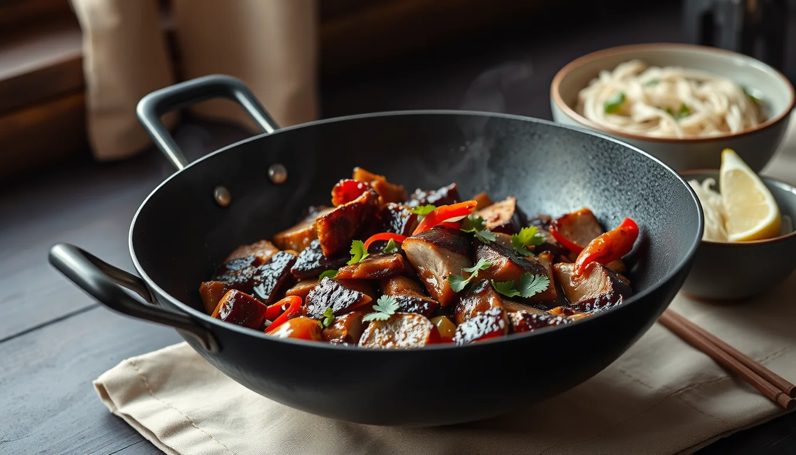
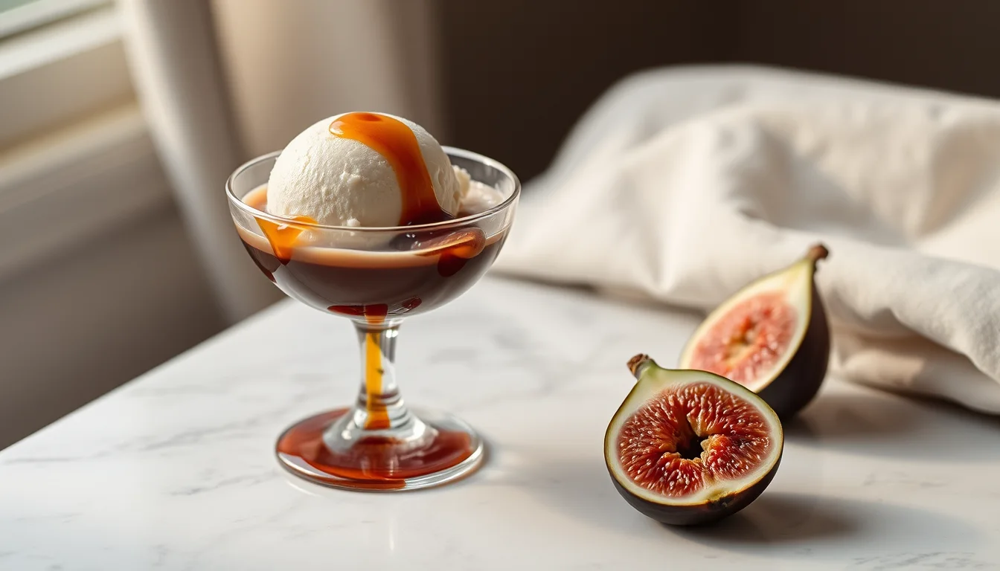
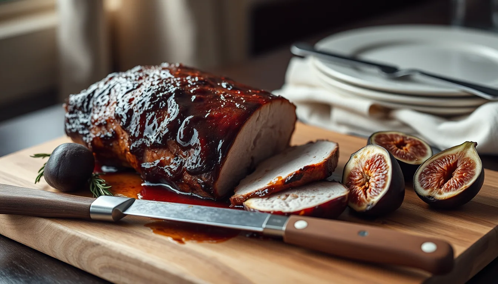
VIIMedia plan
Boxes in November, calls in December, a second round in January, deliveries in the second week of February, tastings every Saturday to Easter, the lunch in the middle of the festival.
Hover any bar for its dates. The two tables in the chapters above carry every tactic with its cost and the reason Santo would do it.
The trade half is almost all earned and owned. Its hard costs are the boxes, a small LinkedIn budget aimed at a few hundred named people, and the paperwork for RangeMe, Metcash and Partner Hub. The expensive medium in the trade half is Santo's time on the phone, which is also the medium that works.
The consumer half spends where a shopper can taste or see the product within driving distance of a store that stocks it: tastings, shelf material, geo-targeted social, local press. The one large item is the harvest lunch, which is also the one thing in the plan that no competitor can copy. SBS, television and the big-name cooks are held as options against quotes rather than bought on faith.
VIIIBudget
The brief said low or minimal. Agency time, the family's time and about ninety sample bottles sit outside these figures.
| Budget | Hard cost | What is in it |
|---|---|---|
| Minimal | $12,500 | Boxes, LinkedIn organic, trade PR, feed build, six tastings run by the family, writer seeding, creator seeding without paid posts, $1,000 of Meta advertising. No harvest lunch coach; writers drive or are hosted overnight. |
| Recommended | $19,100 | Everything in the matrix as costed. |
| Extended | $35,000 | Adds a quoted SBS On Demand test in Victoria for the launch fortnight, twelve more tasting days, a paid Inside FMCG feature, a stand at C&I Expo, an Australian Food Awards entry in the syrup class mid-2027 and a Fine Food Australia stand in September 2027. |
The recommended version spends around $5,000 reaching buyers and around $14,000 reaching shoppers. The split is deliberate: a buyer is reached with a bottle and a phone call, which cost little, while a shopper is reached one spoonful at a time across a dozen Saturdays.
The minimal version drops the four paid creator reels, halves the tasting days by putting family behind the table, and sends writers to the harvest lunch under their own steam. The extended version adds the things worth doing once a quote is in hand: an SBS On Demand test in Victoria, more tasting days, a paid Inside FMCG feature, a stand at C&I Expo on 16 and 17 March, an Australian Food Awards entry in the syrup class in mid-2027, and a Fine Food Australia stand in Sydney in September 2027.
IXDecisions
Each comes with a recommendation. The package is built so that any of them can go the other way without rebuilding it.
$12.00 as in the second email, or $12.50 as in the first. At $12.00 an independent earns 37.5 per cent; at $12.50 a round 40 per cent. Recommendation: $12.50. Everything here is written at $12.00 and changes with one find-and-replace.
The label says Lacrima Fici; the website says Fyrup. Recommendation: Lacrima Fici on the website, the trade page and the social accounts before 16 November, with the Fyrup name retired or kept as the farm's own online store name only.
$149.95 for twelve 250 mL bottles undercuts the proposed shelf by 17 per cent on a per-millilitre basis. Recommendation: lift it to shelf parity, or rename it a gift case and price it above the shelf.
One platform with a line for each audience, or one line everywhere. Recommendation: the layered version, with Tear of the Fig as the brand.
Independents first with the majors as a 2027 range review, or a harder push at Coles and Woolworths for February. Recommendation: independents first. The majors' calendars and terms are the evidence.
Kept as a Dan Murphy's conversation off the label, or dropped to protect the GST-free position outright. Recommendation: keep it off the label and the website, raise it only in the Dan Murphy's meeting, and have the accountant confirm the GST reading first.
13 March with a coach from Melbourne at about $3,500, or a smaller version where guests make their own way. Recommendation: the coach. The day is the campaign's one unrepeatable asset and the coach is what gets busy writers to Shepparton.
Minimal at $12,500, recommended at about $19,000, extended at $35,000. Recommendation: the recommended tier, with the extended items bought one at a time as quotes arrive.
The GST position is an inference from the ATO food list, not a ruling on this product. The fruit cost only works with the family's own second-grade crop; a bad season or a decision to buy fruit breaks the price. The majors' calendars may not open until late 2027. Freight on single cases eats a third of the case. The Figgery occupies the maple-alternative idea in South Australia.
No glycaemic or health claim can be made without testing the actual syrup, and the website's current line about diabetics has to come down before any buyer reads it. The link between this family and the Figtasia Farms story in the Shepparton News is unconfirmed. Editor names in the research were current in October 2026 and move. Every unverified figure is marked as such in the research documents and has been kept out of the copy.
By 30 October: confirm the price, the name, the GST position with the accountant, the Figtasia Farms connection. By 6 November: the website carries the Lacrima Fici name, the trade page and the corrected case price; the RangeMe profile, the Metcash expression of interest and the Partner Hub registration are lodged. By 13 November: forty boxes packed, the sell sheet printed, the LinkedIn posts scheduled, the trade release approved. 16 November: boxes posted, release out, first post live.
XDocuments
The strategy in full, the copy ready to edit, the image plan, and the four research documents every number above traces to.
The brief for this work came from Geoffrey McDonald Bowll at Starship on 24 October 2026, with reference images of The Figgery and Hillside Family Grove. Dates for Easter and Shrove Tuesday 2027, the identity of the SBS presenter named in the brief, and the maple price comparison were corrected during the research and are noted where they occur.